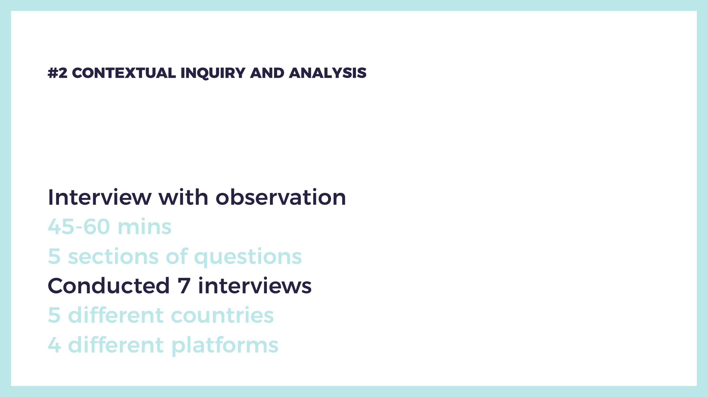
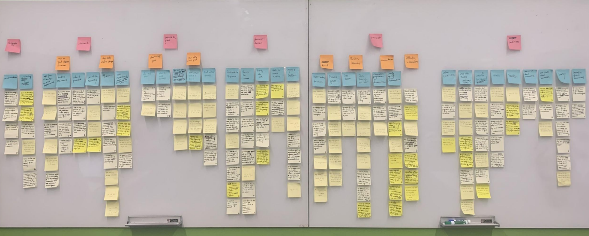
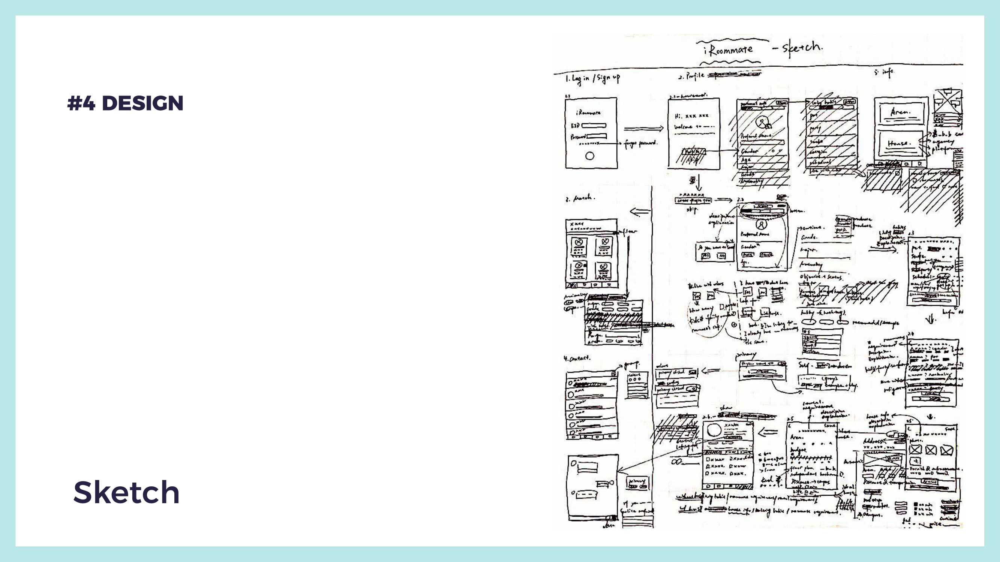

The Furniture Reuse Program is attempting to increase UT's sustainability. UT can save money and help the environment by redesigning the flow for repurposing furniture. Our team is the Winners of the Central Texas Sustainability Grant.
My role was to conduct research, design, and get feedback from users.
Historically, there has been a systemic focus on recycling, despite the fact that recycling may not be the greatest waste management alternative because reducing, reusing, and repairing can save money and the environment. Our team seeks to understand how waste, such as outdated equipment or extra materials, is disposed of by the University of Texas and opportunities that it could be reduced, reused, or repaired rather than recycled.
We conducted contextual inquiry and analysis to better understand students' needs. We interviewed seven students to learn about what they do and how they feel when looking for a roommate.
 To come up with a solution to the research's findings, we pay special attention to the barriers they met. This is when teamwork values. Everyone put forward ideas freely or thought about improvement based on others’ half-baked ideas. We also sketched on paper to help present our ideas and drew down which solution we had selected.
1.Students are concerned about security and trust, so this platform is only accessible to those who have an EID. Students can also control who can see their profile.

we received useful feedback from the user through user testing, which helped us improve our design.